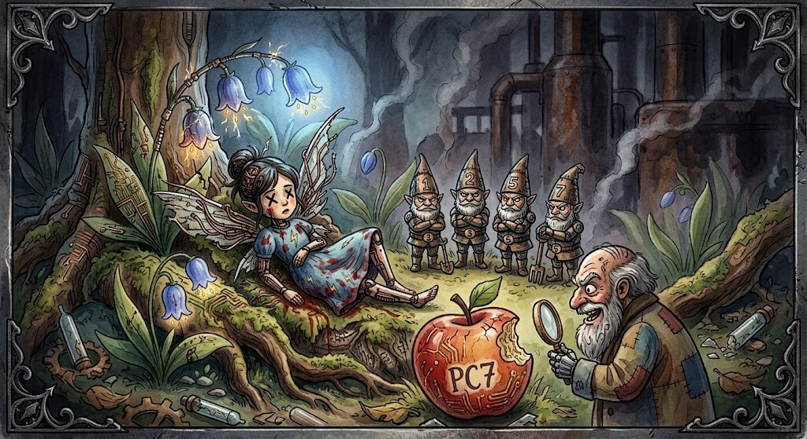
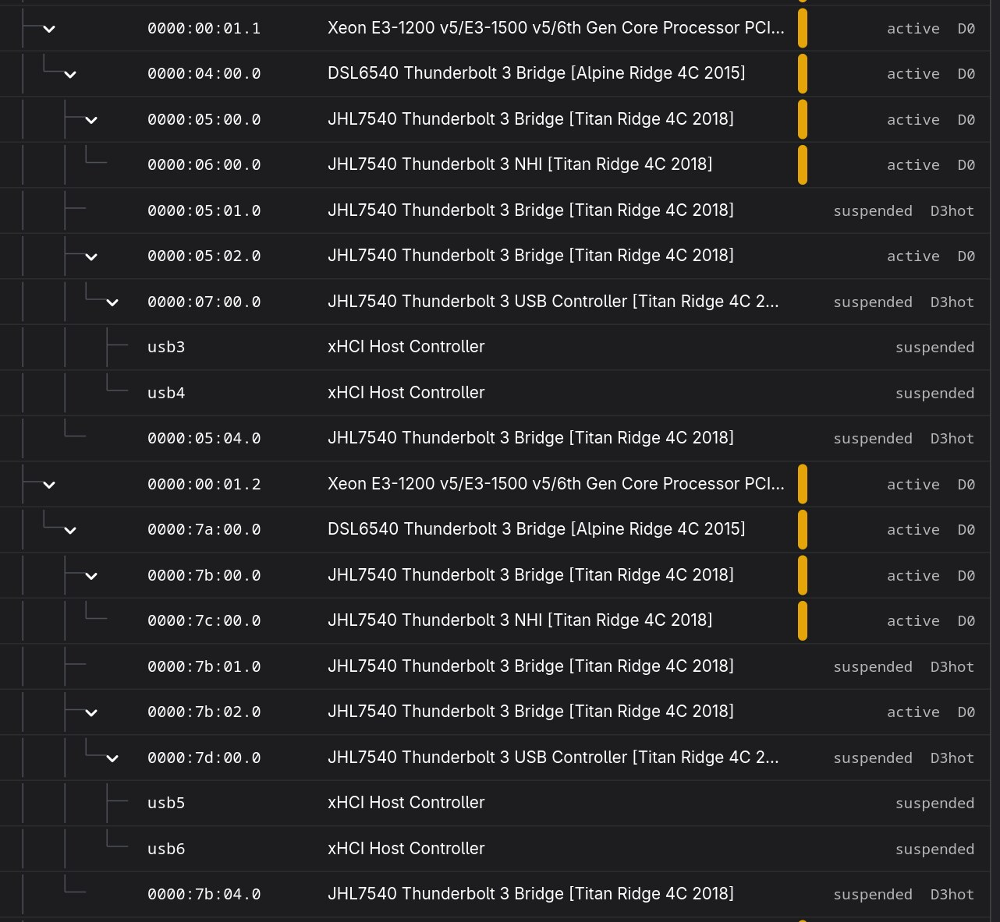

Thunderbolterella Swallowed the Whole Apple
The hunt for deep package C-states on the 15,1 MacBook Pro gets ugly

Thunderbolterella was home alone in her unibody case. The seven C-states had flown out, the fans were quiet and nobody was supposed to touch anything.
Naturally, we touched everything.
This is the next chapter of Three watts and a dead USB port. Back then we had already seen the MacBookPro15,1 reach package C7. It saved roughly three watts, which is a lot on a laptop, but USB 3 storage stopped coming back reliably. That's why I withdrew the patch upstream. We enabled native PCIe port services and got hotplug and UAS working again. Package C7 disappeared in that process.
That was supposed to be the clean starting point.
The cherry-pick that ate resume#
While moving the working 15,1 hybrid graphics implementation onto main, an old
Thunderbolt change came along for the ride. Nothing exploded. Suspend still
worked. Resume still worked. The machine merely sat on a black screen for
about 20 seconds before the embedded controller finally came back.
And it took me three days to notice, because I never have the time to suspend.
I literally work the whole day on the 15,1 and then I shut it down for the night.
Because suspend still consumes 0.3W to keep RAM alive. So for sleep and longer periods
I shut it down. Presumably until the day I get hibernation working.
[86.680577] ACPI: PM: Waking up from system sleep state S3
[106.251963] ACPI: EC: interrupt unblocked
This was the regression. Twenty seconds to unblock the EC controller on resume. This means twenty seconds of a MacBook playing dead after opening the lid. What a royal P in the A. I actually solved that. Why is it back again?
I did not notice it during the cherry-pick. Hybrid graphics worked, the dGPU
went to DynOff, external displays worked and there were enough other things
to test. Commit - push - Bwah!
Who ate from my branch?#
The Thunderbolt repository did not exactly help.
We build the complete Thunderbolt driver out of tree so that a change can be
tested locally without compiling an entire kernel. That is brilliant when you
know which change you are testing. We had several branches, uncommitted
experiments, an unsure old known-good state, a withdrawn xHCI patch and a patch series
from @byte that had reached revision twelfty-something while upstream maintainer
Mika turned out to be a shapeshifter around patch #7.
I leaned back, took a deep breath. I relaxed myself completely. That helped my brain form a clear thought and express it through my mouth.
Oh my lord, what have I pushed?#
"What the f is going on here?!" - It actually tried to communicate "Who has eaten from my little plate?" to stay on topic here.
It also became increasingly difficult to tell which parts of the series came from which debugging session. Some of the device-link work was shared, some of the link ordering came from our local experiments and later revisions had already moved beyond the driver installed on the test machine.
I wasn't able to tell what my code was actually doing at this point. Before touching package C-states I would need to find out.
Jeff Bridges - or what does Luke do in my warm water#
So we stopped looking for C7 and turned t2thunderbolt upside down.
It is a little helper module that contains fixes for link ordering
on resume and it allows us to fix the larger thunderbolt driver
without the need to ship and maintain it. Practically speaking, KaiT2en uses two
Thunderbolt drivers. And I may have it abused to try something and forgot about
it in the process.
The MacBookPro15,1 does not have one neat Thunderbolt device. It has two mirrored PCIe trees. One for each side of the MacBook. Each starts at a CPU root port, passes through an Alpine Ridge bridge and a Titan Ridge bridge, then splits into an NHI, several downstream ports and an xHCI controller. On a saturday morning, things like these make my eyes cross:

Bridges..Bridges...Even more Bridges...Jeff Bridges!
This stuff makes me feel like Kevin Flynn being sucked into the TRON mainframe.
Our Power-Explorer app makes the relationship visible. The xHCI at 07:00.0 and
7d:00.0 could suspend into D3hot without breaking anything. Their immediate
parent Jeff Bridges at 05:02.0 and 7b:02.0 could not. Allow those Jeff
Bridges into D3 and resume spent about 20 seconds waiting for the EC. EC means
Embedded Controller BTW.
I started an ACPI experiment that tried to follow Apple's RTPC
path made things worse: slow resume, xHCI reinitialisation, dead UAS and still
no package C7. And a dead Jeff Bridges. And a luke warm cup of coffee. Dammit.
Saturday morning long gone. We are in the afternoon now.
There was the missing piece. Not a grand PC7 breakthrough, but at least the regression finally had a name.
The safe arrangement is currently:
05:02.0 D0
└─ 07:00.0 suspended D3hot
7b:02.0 D0
└─ 7d:00.0 suspended D3hot
With that restored, the EC came back in roughly one second again.
[ 97.432854] ACPI: PM: Waking up from system sleep state S3
[ 98.488680] ACPI: EC: interrupt unblocked
USB 3 hotplug worked. UAS worked. Suspend worked. Resume worked. AHA!
(Ah, push it) push it good
(Ah, push it) p-push it real good
The seven C-states everyone claims to have seen#
Package C3 as a result. Doesn't feel rewarding.
Now we could return to the actual mystery. Somewhere between package C3 and package C10 live seven increasingly mythical power states. Everybody had seen them once. There were screenshots. There were old measurements. PC7 definitely existed. It simply refused to appear while Thunderbolterella remained alive.
I checked the obvious suspects. The CPU cores themselves regularly reached
C7 and C10. PowerTOP showed wakeups, but not enough to explain hitting a wall at
PC3. The PCH xHCI controller suspended. Bluetooth was detached long enough to
turn the LPSS power island off. Wi-Fi was tested. ASPM L1 was enabled across
the populated Thunderbolt links. Even changing the ASPM policy to
powersupersave did not move the package by one state.
Finally I checked whether firmware had simply capped the package at C3:
MSR_PKG_CST_CONFIG_CONTROL: 0x8
Package C2 : 153163464
Package C3 : 367368581
Package C6 : 0
Package C7 : 0
Package C8 : 0
Package C9 : 0
Package C10: 0
Nope!
On Coffee Lake, 0x8 means unlimited. The cores can sleep deeply, the firmware is
not setting a PC3 limit and the deeper package counters remain exactly zero.
That leaves an uncore, PCIe or PCH power-gating condition.
Thunderbolterella still has the Apple stuck in her throat.
The seven C-states do come back when we kill Thunderbolt completely. They are happy to attend the funeral. But nobody can get the Apple out of her afterwards. Not even the dude himself, Jeff Bridges could do that. The controllers become inaccessible, resume throws PCI power-state and ring warnings, configuration-space accesses time out and Thunderbolt does not return to life.
That is not power management. That is a burial.
A baseline before the next fairy tale#
This time we wrote down the boring state before continuing. The current baseline has fast resume, working USB 3 hotplug, working UAS and package C3. Every future PC7 experiment has to retain all four. Seeing a lower wattage or a deeper C-state is not exactly a success when storage disappears or the machine spends 20 seconds waking up.
We still know package C7 is possible on this hardware. At least. Theoretically even C10 is possible. But that requires reverse engineering PSR and possibly even worse. We also know more precisely which parts of the Thunderbolt tree may sleep safely and which ones currently swallow the whole Apple. The next step must be to move up that tree one device at a time, with a known-good branch underneath and no more mystery commits hiding in the carriage.
Thunderbolterella is alive again. The seven C-states are still out. But hey, 9W on idle on a 8 year old 15 inch without OLED isn't that bad. You hear me, Lenovo? We're coming for ya!